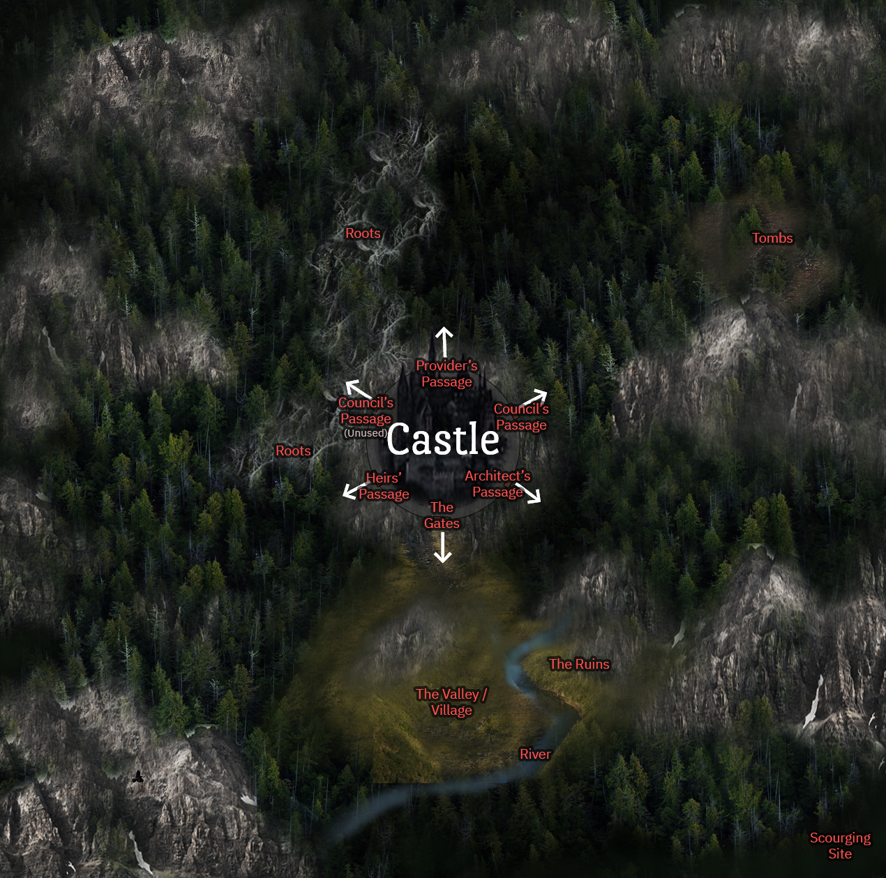

Locations
Grimsby. The very word conjures a sense of gloominess, of bruise purple clouds and mist as white as specters. It means formidable, like the surrounding mountains, those steep behemoths with their jagged spines. It is to be cruel and grating to the senses, like the castle, that impenetrable fortress with its many black spires and turrets. In a place that is all sharp edges and tapered points, everything cuts until it draws blood.
THE CASTLE
All the Founding Families live in the Castle, a gothic fortress so unfathomably large and overbuilt as to be a city in its own right. It is said that the Castle was not built by human hands; it seems to have thrust from the mountain below it, molded from that same rock by some other force of nature. There is no way to tell where the mountain ends and the Castle begins; the stone gradually elaborates into walls and crenellations and too-tall towers, embellished with gargoyles and pinnacles and ornate tracery. And yet, despite its size and uncountable amount of halls and rooms, it elicits a claustrophobic feeling; there are simply too many towers huddled too close together, sparing neither land or sky in their conquest for more space.
The Castle also shifts like a restless beast: a displaced gargoyle here, a new arched gateway there, towers that swell and shrink and slide like pieces on a chessboard. Sometimes, these shifts are autonomous. Just as a person may need to stretch their legs after sitting too long, so does the Castle require equivalent relief. But it will also morph itself according to the requests of Grimsworth and the Provider, with whom it shares a deep connection. It is unknown to the Founding Families how such a connection is established.
Inside, new rooms are fashioned in an instant. Furniture is molded on command. They emerge from the walls and floors and ceilings–an amorphous mass that distends and contorts into the furniture requested, down to their make, feel, and shape. Many a cupboard, chaise lounge, and chandelier have been created in this way. They can be rearranged, shuffled from one place to another, re-molded into something new, or even absorbed back into the Castle. In every way they are perfect mimicries, with one exception: they will always be fused to the Castle. It is not possible to sever them or destroy them through ordinary means. Because this is not always ideal, the Founding Families possess some amount of manmade and manifested furniture as well.
It is also important to note that the Castle has its own limitations, for it too is a creature with a mind and feelings of its own. For instance, it is not immune to exhaustion. If compelled to change too much too quickly, it becomes prone to sluggishness or even downright stubbornness, refusing to budge until it is given adequate rest. It also cannot be compelled to remove its statues. Nor will it accept requests that are of such a malicious nature they could wreak havoc or endanger lives. Its primary purpose, after all, is to protect and provide comfort to those who live inside of it. For this reason, anything deemed potentially dangerous is also barred from entry; curios not escorted by an architect will not be able to pass through its doors. That, of course, does not mean the Castle never makes mistakes, or that curios cannot enter by themselves through other means.
Gatehouse
Carved into the mountain base are the narrow steps leading to the castle entrance, an arched gatehouse fortified with a portcullis. Like the ramparts, the gatehouse is guarded by Hollows tasked with keeping all residents of the Castle within.
Courtyard
Through the gatehouse, one will find themselves in a courtyard paved with cobblestone and surrounded by gothic buildings of grandiose proportions.
At the center of the courtyard is a stone fountain. Its basin is about knee-height, and within is a cubic platform with gargoyle spouts. The topmost surface of the platform is curiously empty, but the uneven discoloration suggests that this was not always the case. In fact, the platform was once occupied by a shapeshifting statue that only very recently disappeared.
Directly across the gatehouse are the grand arched doors leading to the entrance hall.
The Entrance Hall
In the middle of the expansive Entrance Hall is one of the Castle’s most impressive structures: the Founder’s Tree. It is a bone-white pillar that is fifteen meters wide at the base and about fifty meters tall, with a spiral staircase that clings throughout its length.
Though its silhouette is that of a tree, this is where the similarities end. For in lieu of branches, the leviathan busts of the First Founders protrude from its trunk in alternating fashion. They are giants among men, heads bent and white eyes unseeing, each with an arm outstretched to support its corresponding balcony on the adjoining wall. Meanwhile, their bodies form the ridges along the pillar: those disfigured torsos and crooked limbs entwining like vines.
When day breaks and sunlight filters in through the stained glass windows, the statues are drenched in a scarlet glow reminiscent of blood.
The Dining Hall
Behind the base of the Founders’ Tree are the doors to the Dining Hall, a place that is perhaps most reminiscent of a cathedral’s interior. It is a long and narrow space with ribbed vaulted ceilings and candlestick columns and lancet windows. Like the ones in the Entrance Hall, these windows are stained glass, but what at first glance may seem like abstract patterns actually contains a story. It is a chronological depiction of a child’s adventure in the woods. It starts off innocent enough, and yet with every image the story gets darker. Disease, treason, death… these are just a few of the horrifying things displayed on these windows, and if they were just a little more conspicuous the Founding Families would surely be mortified to see them.
In total, there are six refectory tables in the Dining Hall. Five of these are arranged side-by-side, representing each of the Founding Families. They are situated alphabetically: Blackwoods to the left and Stonehalls to the right (when viewed from the doorway). The sixth table, meanwhile, is positioned on an elevated gallery in front of the Hall. It is placed perpendicular to all other tables to further signify its importance. This is the table of the Provider and the Council members.
It is customary for all castle residents to take their meals together. This way, food is distributed evenly among the Families. Outsiders, however, are never part of these feasts. They are only ever permitted entry after the Families have had their fill; at this point, there are only leftovers, which at times could be rather scarce.
The Kitchen
The kitchen is a wandering room. The Provider regularly manipulates the location of this room so as to ensure that provisions are safely and securely hidden away. A number of Faceless Servants also occupy the kitchen, tasked with cleaning and cooking and securing the area.
Prior to feasts, the Provider would summon the kitchen as well as a temporary door to allow the Faceless Servants to set the tables, bring the meals, and clean after the residents.
The Residence Halls
The Founders’ Tree does not only exist as a tribute to Grimsby’s first settlers, it is there to serve as the grand entryways to the residential areas. For each balcony supported by a Founder’s sculpture holds the entryway to the corresponding Family’s Residence Hall.
All members of a particular Family do not necessarily cohabitate in one space. In fact, the halls are each divided into rooms and corridors of various sizes and degrees of extravagance, so that each branch of the Family has their own private domicile. Within, these spaces are arranged much like multi-storey houses. Some are humble, others are rather more ostentatious. It depends entirely on how much they are favored among the Families. It pays to be in the Provider’s good graces.
Residence Halls may look drastically different from one another, but it is clear that some comforts are deeply ingrained. The Families are all quite fond of their intricate wallpaper, elegantly carved woods, lavish drapes–small vestiges of the Regency Era that may escape the untrained eye. Faceless Servants are also a common sight here.
(Player Lore - Founding Family players may decide how each Residence Hall looks like.)
The Outsiders Hall
Situated above the sculptures of the first Founders is a balcony that leads to the Outsiders’ Hall.
Upon entering the door, an outsider will find a long hallway with windows on one side and doors on the other. The hallway itself appears much like other areas of the castle, with its high vaulted ceilings and large, curved windows. But the rooms themselves are constructed and furnished much like modern dormitories: simple, with two single beds, wooden bureaus, and closets embedded into the walls.
The communal shower rooms and lavatories can be found at the end of the Hall. These, too, are modern in construction for the outsiders’ comfort.
The Council Tower
There are certain areas that are not part of the castle itself but are actually manmade. For the most part, these specially erected buildings cannot be influenced by the castle’s changeable nature, even if they may look indistinguishable from its architectural design. Of course, they still have the tendency to wander due to the simple fact that they were built on the castle’s very foundations, but the structure itself cannot change or generate furniture.
One such area is the Council Tower. Weary of the castle’s unpredictable changes and the ever-watching statues, the First Founders created this place as a safe haven for themselves. It has few windows and only one entry point: a curio in the shape of an intricately carved wooden door, which changes with every new generation of Council Members. Curiously, the current door has no handlebar, but it does have a knocker secured to a lifelike imitation of a crow’s head.
Because of the sensitive nature of the objects and books inside the Council Tower, security measures are in place to ensure that any would-be trespassers are swiftly caught and dealt with. Therefore, it is in one’s best interest to avoid this tower at all costs lest they wish to tempt fate. The numbers speak for themselves: no one else outside of the Council has ever made it into the tower independently. Only the Heirs, when invited inside or accompanied by a Council Member, are allowed access under special circumstances. Even then, this only occurs during their last year as heirs.
Interior (To be unlocked) - A place of forbidden knowledge, the Council Tower is said to hold an unfathomable amount of books sourced from the Beyond.
The Lonely Tower
This particular tower is quite similar to the Council’s in terms of outward appearance, except it is not a manmade structure and is significantly smaller than its twin. This is the place where the Heirs convene.
There are no obvious entry points to the Lonely Tower. The only way to access it is through a secret passage located elsewhere in the castle. Entrance to this passage is said to be a door that blends among the walls.
Within the tower itself is a spiraling staircase that culminates in a room at the apex. It is a strictly functional room: no diversions, no frills. At the center is one round table surrounded by five chairs, and off to the side is the lifelike statue of a hooded figure, believed by some to be a Hollow in disguise. It acts as a pedestal, palms turned upward to hold a book in place. This book is the heirs’ copy of the Grimoire.
The Lonely Tower earns its name because it is often neglected in the twenty long years without Heirs.
Secret Passages
The castle has many passages, many of which are shortcuts to other areas within castle grounds. These passages are always in the same place, hidden in plain sight: under a couch, through a cabinet, behind an old portrait. Many residents are aware of their existence and know where they can be located.
But there are other passages known only to a select group of people. These often lead to the forest, but some are known to lead to restricted areas within the castle as well. The Provider manipulates the location of these passages every week to ensure no unauthorized individuals stumble upon them. Entryways and exit points are also painstakingly concealed. Often they are indistinguishable from the castle walls and must be pushed open for the passageways to be revealed.
Every week, the Council and the Heirs are briefed on the location of their corresponding passages. They must not reveal this information to anyone outside of their rank.
Provider's Passage - Does not always exist. Created by the Provider when needed.
Council's Passages - There are two passages that are exclusively for the Council’s use. One of these is currently closed due to an infestation of roots.
Heirs's Passages
Architects's Passages - The Council is also provided with the location of the Architect’s Passage, which they must pass on to Architects with any ongoing rituals or business in the forest.

THE GRIMWOOD FOREST
There are many notable locations within the Grimwood forest. Some of these are actively avoided, like areas dominated by the Roots. But locations frequently visited are all connected by stone paths.
Ritual Areas
The Provider, Council, Heirs, and Architects each have their own exclusive areas in which to perform their rituals. These are reached via the secret passages. Entry to each passage changes every week, but the exits are always located in the same place.
The Torture Tombs
A place where miscreants are imprisoned, located deep within the Council’s region of the forest. Each tomb is a cubic structure made out of stone. Within, it is completely empty and dark, made intentionally so to induce the worst illusions for its prisoners. Even accomplished architects, when subjected to such darkness and isolation for so long, will eventually succumb to these illusions despite their training.
(Other notable locations - To be unlocked)
THE VILLAGE
The Ruins
Many, many years ago, a few members of the Stonehall Family began constructing a house of their own near the village. When construction finally finished and the group toured their new home, the building collapsed in on itself and killed everyone inside. A freak accident, the Council called it. Since then, no one has dared to follow in their footsteps. It is believed that to do so is to subject oneself to a similar fate.
Because the Ruins are tainted by death, no one–not even Council Members–dares approach it.